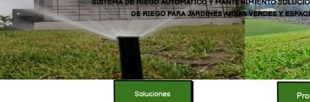

ETAPA 1
Diseño y presupuesto
Analizamos el espacio y definimos una solución de riego acorde a sus características.


INSTALACIÓN
Un proceso organizado desde el diseño y presupuesto hasta la configuración del sistema.
Analizamos el espacio y definimos una solución de riego acorde a sus características.

Instalamos tuberías, aspersores, electroválvulas, controladores y demás componentes.

Programamos el sistema y verificamos su funcionamiento para entregar una solución lista para usar.
Solicitar evaluación →Programación, verificación y acompañamiento técnico.